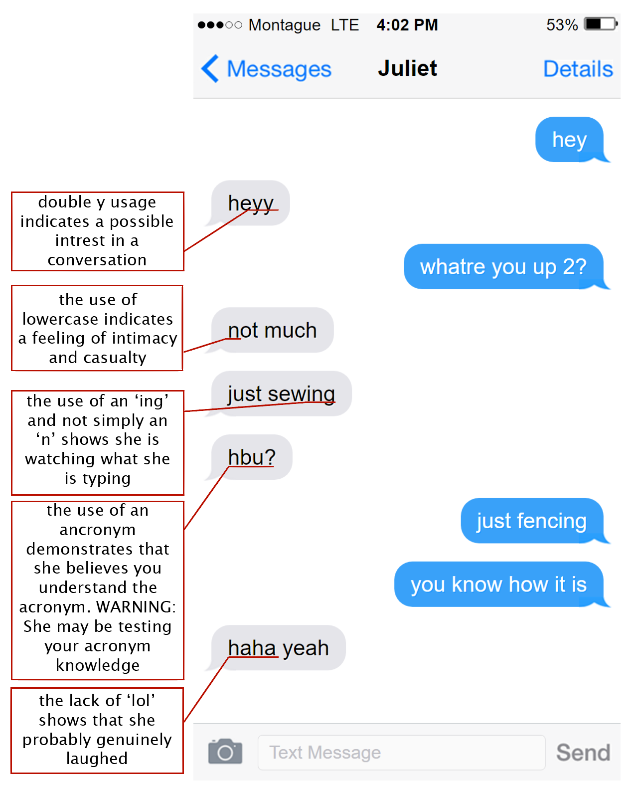

This GenderJournal is for .
This is my GenderJournal project for AP English.
To change your gender, select the button labeled males.
Anatomy of a text message.
Inspired by being a 21st century teen.
Taken from a 22nd century textbook from Google High, the high school for all the online kids. It is reproduced with permission from the original publisher and all those involved in its creation.
